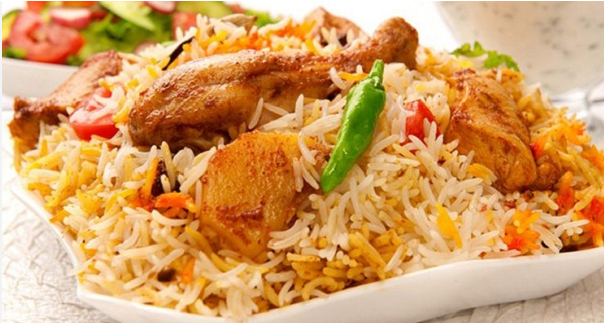

My Favorite Foods
-
Mutton :
Mutton is meat from a mature sheep that is typically over one year old. It is a popular meat in many parts of the world and is
known for its distinct flavor and tenderness. Mutton is often used in traditional dishes such as stews, curries, and roasts.
Mutton is a good source of protein, iron, and vitamin B12. It is also high in fat, which can make it a less healthy choice than other meats if consumed in excess. However,
lean cuts of mutton are available and can be a nutritious addition to a balanced diet.
-
Birani:
Chicken biryani can be made in a variety of ways, including on the stovetop, in the oven, or in a pressure cooker. It is a flavorful and satisfying dish that can be served on its own or with accompaniments such as raita, chutney, or salad.
Biryani is a dish that is enjoyed in many parts of the world and is often served on special occasions or as a festive dish. It is a complex and flavorful dish that combines the best of Indian and Middle Eastern flavors,
and it is loved by many for its delicious taste and comforting qualities.
-
Orange :
Oranges are a good source of vitamin C, folate, and potassium, and they also contain flavonoids and other antioxidants. They have been associated with a
number of health benefits, such as boosting the immune system, reducing inflammation, and improving heart health.

welcome to my website